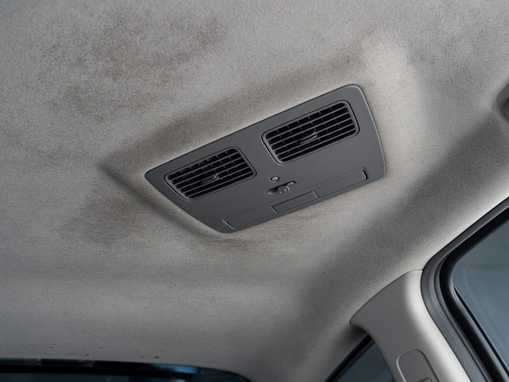
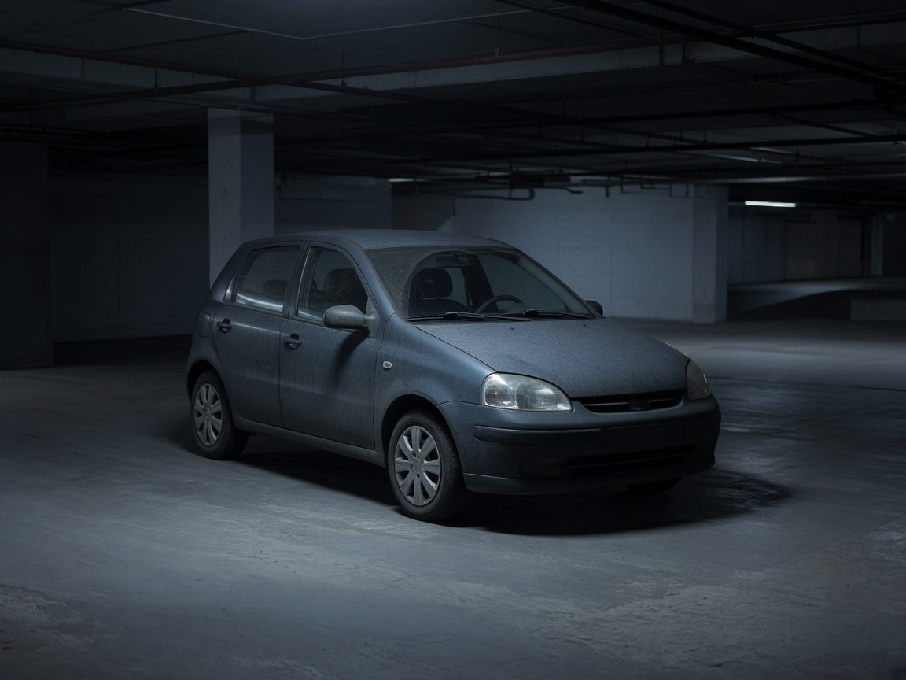

자살차량 특수청소
송파 자살차량 특수청소 · 견인 후 실내 복원
일반 견인이 어려운 오염 차량을 이동한 뒤, 시트와 공조까지 특수청소하고 인도했습니다.

번개탄 차량 탈취
수원 번개탄 차량 탈취 · 공조라인 세척
천장과 송풍구에 남은 그을음·냄새를 공조라인 세척과 연무 탈취로 처리했습니다.

고독사 차량 특수청소
부산 고독사 차량 특수청소 후 폐차 말소 안내
발견이 늦어진 차량의 내부 오염을 제거한 뒤, 복원보다 고인명의 폐차 말소가 맞다고 안내했습니다.

상속차량 보관
대전 상속차량 보관 · 한정승인 전 이동 보관
상속 방향을 정하기 전, 고인 명의 차량을 이동·보관하고 이후 처분 순서를 안내했습니다.
작업 사진과 지역·차종을 알려주시면 차량 작업후기에 올려 드립니다. 개인이 드러나는 내용은 올리지 않습니다.